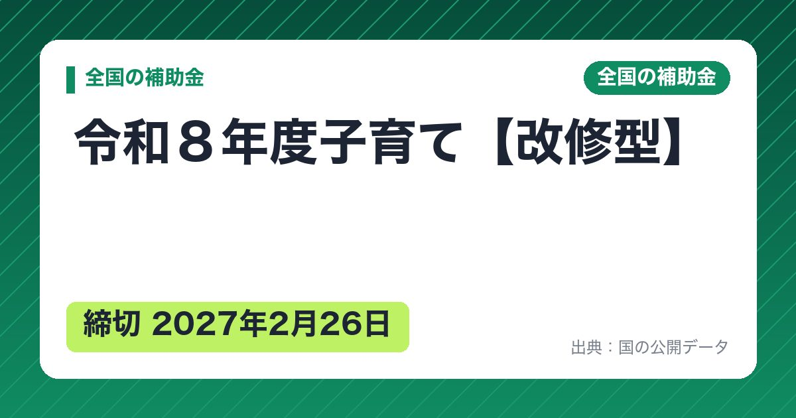

令和８年度子育て【改修型】

締切 2027年2月26日｜上限 要確認
概要
| 対象地域 | 全国 |
|---|---|
| 補助上限額 | 要確認 |
| 補助率 | 補助上限額（安全安心確保：120万円／戸、交流施設：600万円／棟）と、補助対象経費の1/3のうち小さい額 |
| 受付期間 | 2026年4月8日 〜 2027年2月26日 |
| 対象の従業員数 | 従業員数の制約なし |
| 利用目的 | 教育・子育て・少子化支援がほしい |
| 対象業種 | 建設業 / 不動産業、物品賃貸業 |
| 実施機関 | 子育て支援型共同住宅推進事業 |
公募の内容（原文の抜粋）
■目的・概要
共同住宅（賃貸住宅及び分譲マンション）を対象に、事故や防犯対策などの子どもの安全・安心に資する住宅の新築・改修の取り組みや、子育て期の親同士の交流機会の創出に資する居住者間のつながりや交流を生み出す取り組みに係る事業を公募し、予算の範囲内において、本整備に要する費用の一部を補助するものです。
■根拠法令
スマートウェルネス住宅等推進事業補助金交付要綱参照
■応募資格
賃貸住宅所有者（オーナー）
■地理条件
全国
■問合せ先
info@kosodate-sc.jp
■参照URL
子育て支援型共同住宅サポートセンター - 子育て支援型
申請前の準備
- GビズIDプライム（電子申請に必須・無料・発行まで1〜2週間かかることあり）：gbiz-id.go.jp
- 直近の決算書（個人事業主は確定申告書の控え）
- 事業計画（何に使い、どう売上・生産性が上がるか）
- 見積書（買う物・頼む工事の）
ほとんどの補助金は、申請時に直近の決算書（個人は確定申告書）が必要で、交付後も経費の帳簿が求められます。
広告準備に使えるサービス：
・無料の会計自動化ソフト マネーフォワード クラウド会計  （法人の帳簿・決算書づくりを自動化）
（法人の帳簿・決算書づくりを自動化）
・やよいの青色申告オンライン  （個人事業主の青色申告に）
（個人事業主の青色申告に）
全国のほかの補助金
- 【事前着手】令和8年度排出削減が困難な産業におけるエネルギー・製造プロセス転換支援事業（二次公募）（事業Ⅱ/紙パルプ・化学・セメント）（締切 2026年11月27日）
- 令和8年度排出削減が困難な産業におけるエネルギー・製造プロセス転換支援事業（二次公募）（事業Ⅱ/紙パルプ・化学・セメント）（締切 2026年11月27日）
- 令和７年度補正 ディマンドリスポンスの拡大に向けたIoT化推進事業（締切 2026年11月27日）
- 【令和８年度】二酸化炭素排出抑制対策事業費等補助金（地域再エネ水素ステーション保守点検等支援事業）（締切 2026年11月28日）
- 令和８年度二酸化炭素排出抑制対策事業費等補助金（運輸部門等の脱炭素化に向けた先進的システム社会実装促進事業のうち、農業機械の電動化促進事業）（締切 2026年11月30日）
- 【令和８年度】働き方改革推進支援助成金（締切 2026年11月30日）
- 令和8年度 資源循環分野の脱炭素化促進事業（締切 2026年11月30日）
- 産業車両等の脱炭素化促進事業のうち、空港における脱炭素化促進事業① 空港における再エネ活用型GPU等導入支援（二酸化炭素排出抑制対策事業費等補助金）（締切 2026年11月30日）